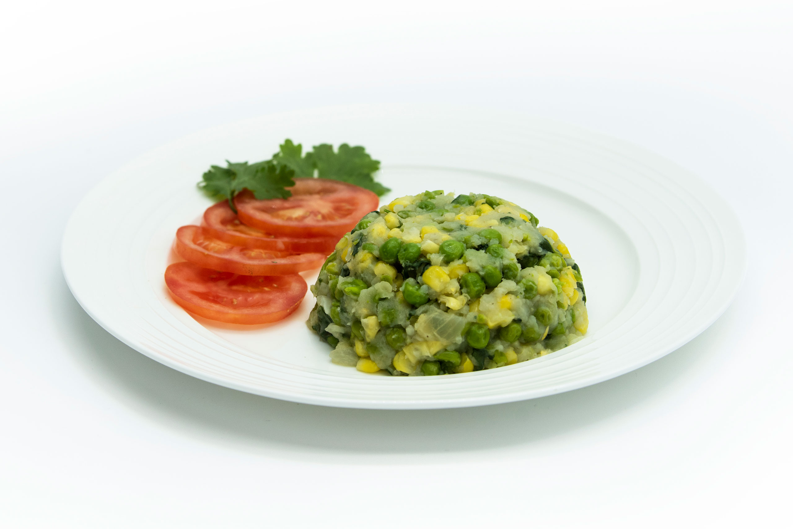

Mukimo

Ingridients
- 1 kg Irish potatoes
- 2 handfuls of pumpkin leaves/spinach
- 3 cups of soft maize off the cob
- A bunch of spring onions
- A spoonful of cooking oil
- Salt to taste
Steps:
- Carefully peel the potatoes and slice them into halves, wash them clean and set aside.
- Prepare the pumpkin leaves by removing the stalk and shred them into sizeable pieces. You can also blend them for richer colour. lf you are using spinach you just need to shred a little bit as well.
- Mix the pumpkin leaves, maize and potatoes in a Sufuria and add some water. Just enough for everything to cook well.
- Place the Sufuria or cooking pot on fire and let the mixture boil for 30 minutes under medium heat. Open and add a pinch of salt and let it cook for 10 more minutes
- In another larger pot/Sufuria, pour in the spring onions and cooking oil and place on fire. Mix until the onions turn golden brown then adjust the heat to minimal and add the Mashed mixture. Mix well.
- You can now remove from the heat and serve while hot.